H5常用套路
传感器篇
陀螺仪、重力感应
Gyroscope
兼容性
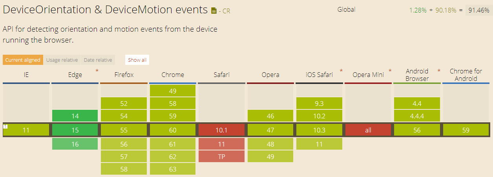设备方向事件
DeviceOrientation Event
window.addEventListener('deviceorientation', function(event) {
var alpha = event.alpha;
var beta = event.beta;
var gamma = event.gamma;
}, false);
Alpha, Beta 和 Gamma 角
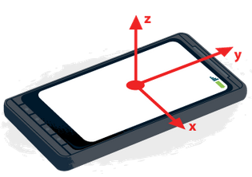 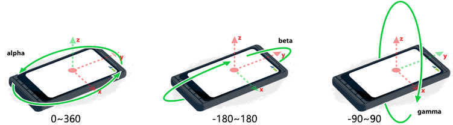Demo
orienter.js
适用场景
全景图/AR转换角度、转动手机制造视差效果、体感游戏
Example
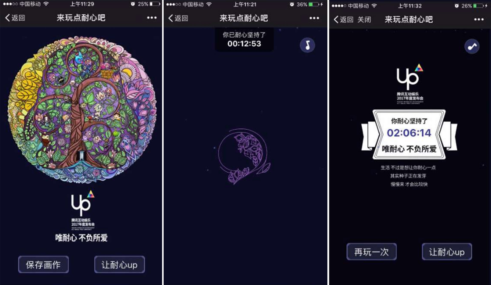Example
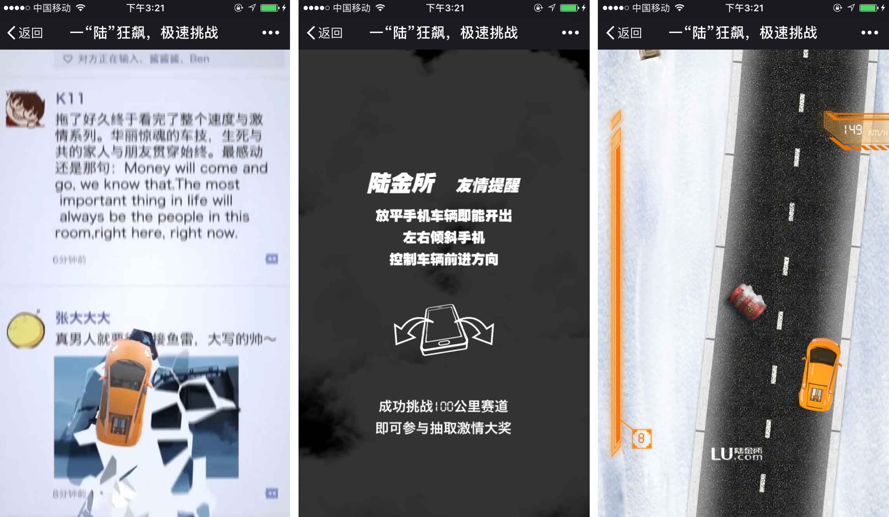物理引擎
3D引擎
设备运动事件
DeviceMotion Event
window.addEventListener('devicemotion', function(event) {
// 加速度( 排除重力 )
var x = event.acceleration.x;
var y = event.acceleration.y;
var z = event.acceleration.z;
// 旋转 ( °/sec )
var ralpha = event.rotationRate.alpha;
var rbeta = event.rotationRate.beta;
var rgamma = event.rotationRate.gamma;
var interval = event.interval;
}, false);
Example
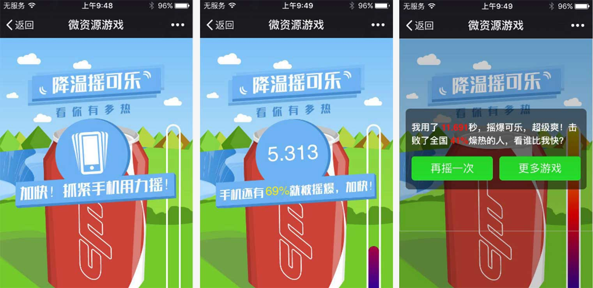适用场景
体感游戏、摇一摇
屏幕朝向
Window.orientation
window.addEventListener("orientationchange",function(){
// window.orientation
// 0 （默认竖屏）
// －90 （向右旋转）
// 90 （向左旋转）
console.log(window.orientation);
});
Window.orientation
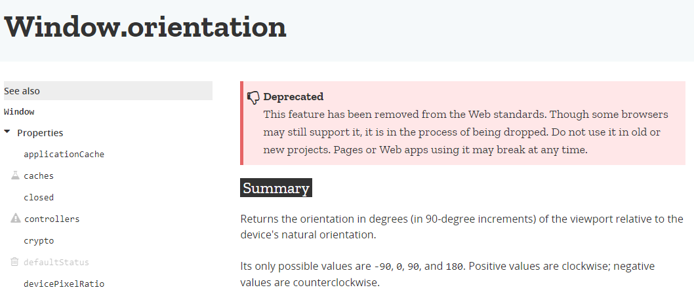Screen.orientation
var orientation = screen.orientation || screen.mozOrientation || screen.msOrientation;
if (orientation.type === "landscape-primary") {
console.log("That looks good.");
} else if (orientation.type === "landscape-secondary") {
console.log("Mmmh... the screen is upside down!");
} else if (orientation.type === "portrait-secondary") {
console.log("Mmmh... you should rotate your device to landscape");
} else if ( orientation.type === "portrait-primary") {
console.log("Mmmh... you should rotate your device to landscape");
}
Screen.orientation
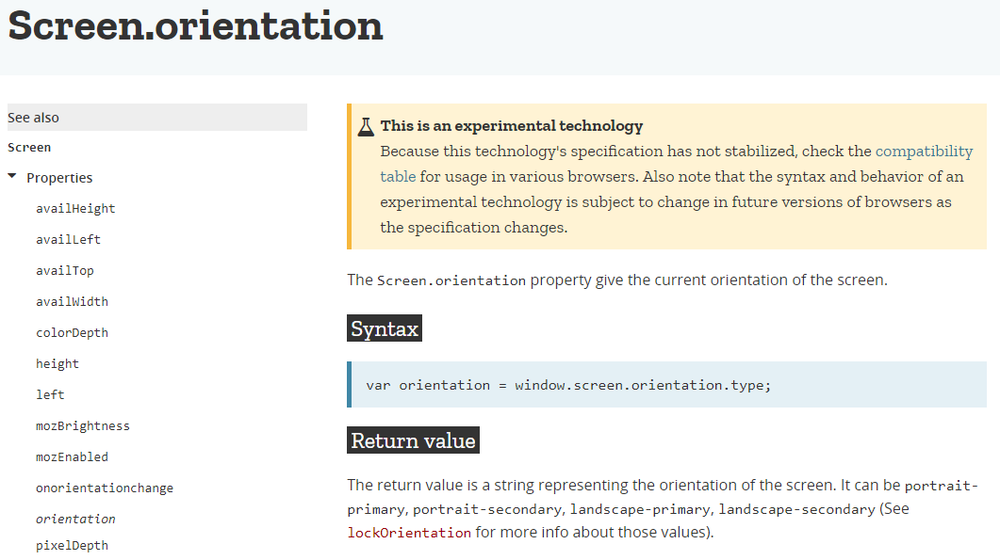兼容性
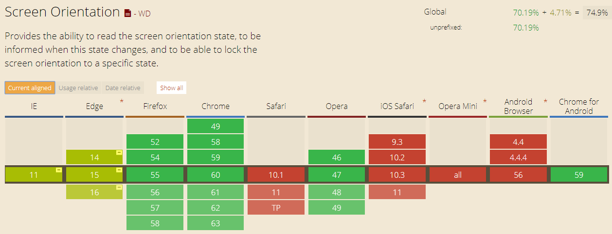Example
Example

适用场景
屏幕翻转监测
地理位置
Geolocation API
- IP 地址
- GPS
- Wi-Fi
- 手机信号
navigator.geolocation.getCurrentPosition(function(){
// 经度 ( degree )
latitude = position.coords.latitude;
// 纬度 ( degree )
longitude = position.coords.longitude;
// 高度 ( m )
altitude = position.coords.altitude;
// 精确度 ( m )
accuracy = position.coords.accuracy;
// 高度精确度 ( m )
altitudeAccuracy = position.coords.altitudeAccuracy;
// 移动方向 ( degree/s )
heading = position.coords.heading;
// 移动速度 ( m/s )
speed = position.coords.speed;
// 时间戳 ( ms )
timestamp = position.timestamp;
},onError,options);
// 基于持续更新的位置信息实现一些功能…
var watchId = navigator.geolocation.watchPosition(updateLocation, handleLocationError);
// 停止接收位置更新消息
navigator.geolocation.clearWatch(watchId);
Web常用地图SDK
Demo
Example
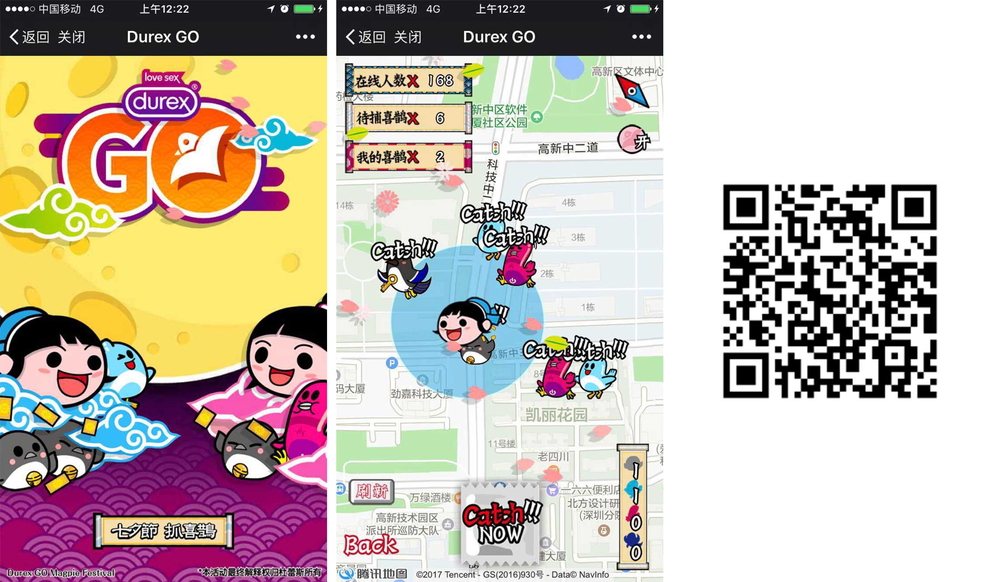要点
- 拒绝定位只能通过系统设置重置
- navigator.geolocation 经纬度转换
- Https 协议
- 天气api
适用场景
提供周边生活服务、与运动结合、上班打卡功能、外勤人员的工作监控、类似QQ的AR红包和pokemon go玩法、展示附近的优惠和广告
WebRTC
webRTC是H5的一个新特性，它可以在web上访问摄像头和麦克风，进行视频和音频的实时通讯。
Demo
Example
适用场景
UGC动图、视频会议、视频聊天、在线教育、在线问诊等视频/音频通讯的场景
人脸识别
Face Recognition
常用人脸识别Javascript库
人脸识别云平台

Demo
Example
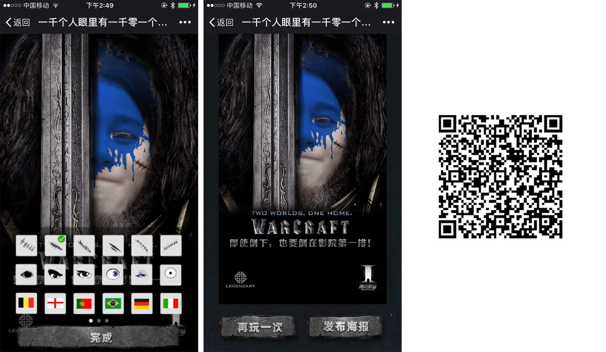Example
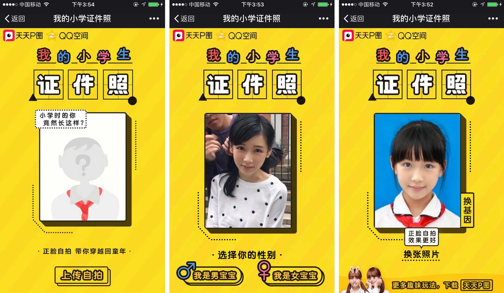适用场景
体感游戏、将用户样貌与节日/游戏/电影等主题元素相结合进行宣传的场景、用户样貌与明星脸相似度测试、猜用户年龄、猜情绪、模拟化妆
Html5案例赏析网站
谢谢
END